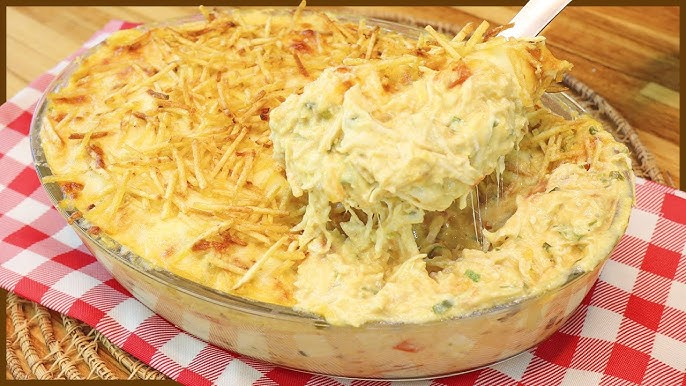

Fricassê de frango

INGREDIENTES
500g de peito de frango cozido e desfiado
1 lata de milho verde
200ml de creme de leite
1 cebola picada
2 colheres de sopa de azeite
Queijo ralado para gratinar
Modo de preparo
Cozinhe o macarrão conforme as instruções da embalagem. Reserve.
Em uma panela, aqueça o azeite e refogue a cebola e o alho.
Adicione a carne moída e cozinhe até dourar. Tempere com sal e pimenta.
Junte o molho de tomate e deixe cozinhar por 10 minutos.
Misture o molho com o macarrão e sirva.
Volte ao menu